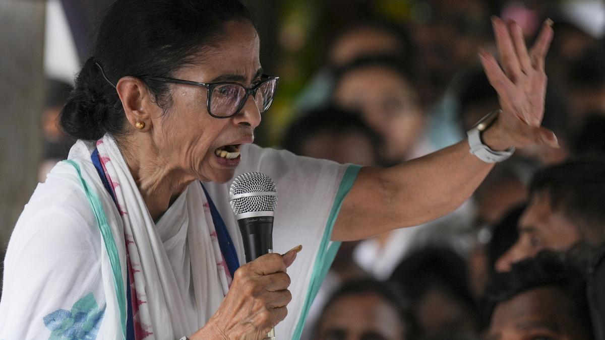

"सूत्रों के अनुसार, तृणमूल कांग्रेस की प्रमुख ममता बनर्जी ने सोमवार को चुनाव आयोग को पार्टी की नई कार्यसमिति की सूची सौंप दी। उन्होंने स्पष्ट किया कि पार्टी में उनकी भूमिका और नेतृत्व अभी भी कायम है। था।
कोलकाता | राजनीतिक संकट
तृणमूल कांग्रेस (TMC) में चल रही अंदरूनी कलह के बीच ममता बनर्जी गुट ने पार्टी की राष्ट्रीय कार्यसमिति का पुनर्गठन किया है और इसकी जानकारी चुनाव आयोग को सौंप दी है।
सूत्रों ने बताया कि ममता बनर्जी ने सोमवार को पार्टी की नई कार्यसमिति की सूची दिल्ली स्थित चुनाव आयोग कार्यालय को भेजी। पार्टी द्वारा जारी सूची पर भी सोमवार की तारीख दर्ज है।
ममता गुट के नेताओं का कहना है कि यह कदम दिखाता है कि पार्टी पर उनका नियंत्रण अभी भी मजबूत है।
इसी दिन रितब्रत बनर्जी के नेतृत्व वाले बागी गुट ने न्यू टाउन के एक लग्जरी होटल में अपनी अलग राष्ट्रीय कार्यसमिति बनाने की घोषणा की।
बागी नेताओं ने दावा किया कि उनकी बनाई गई 30 सदस्यीय राष्ट्रीय कार्यसमिति ही असली तृणमूल कांग्रेस का संगठनात्मक केंद्र है।
राजनीतिक संकट के बीच ममता बनर्जी के कई पुराने सहयोगी और वरिष्ठ नेता बागी खेमे में शामिल हो गए।
इनमें फिरहाद हकीम और अरूप बिस्वास जैसे बड़े नाम शामिल हैं, जिन्हें ममता बनर्जी का करीबी माना जाता था।
रितब्रत बनर्जी ने कहा कि विशेष सत्र में प्रतिनिधियों ने सर्वसम्मति से नए नेतृत्व का चुनाव किया।
उन्होंने बताया कि ऑल इंडिया तृणमूल कांग्रेस कमेटी और राष्ट्रीय कार्यसमिति का गठन किया गया है। अरूप रॉय को चेयरपर्सन बनाया गया है।
बागी नेता रितब्रत बनर्जी ने कहा कि उनका समूह चाहता है कि पूर्व मुख्यमंत्री ममता बनर्जी संगठन से जुड़ी रहें और मार्गदर्शक की भूमिका निभाएं।
बढ़ते विवाद के बीच तृणमूल कांग्रेस ने कई वरिष्ठ नेताओं को कारण बताओ नोटिस जारी किए हैं। पार्टी ने इन नेताओं पर विरोधी गतिविधियों में शामिल होने का आरोप लगाया है।
नोटिस पाने वाले नेताओं में अरूप रॉय, अरूप बिस्वास, फिरहाद हकीम, रथिन घोष, बिप्लब मित्रा, जावेद खान, स्नेहाशीष चक्रवर्ती और सबीना यास्मीन शामिल हैं।
टीएमसी में जारी यह विवाद अब पार्टी के नेतृत्व और संगठन पर बड़ा सवाल खड़ा कर रहा है। आने वाले दिनों में यह देखना महत्वपूर्ण होगा कि चुनाव आयोग किस गुट को मान्यता देता है।